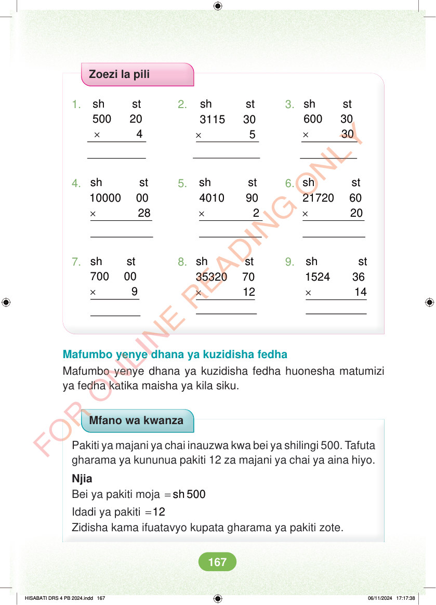

Zoezi la pili 1. 2. 3. × × × sh st 600 30 30 sh st 500 20 4 sh st 3115 30 5 4. 5. 6. × × × sh st 10000 00 28 sh st 4010 90 2 sh st 21720 60 20 7. 8. 9. × × × sh st 700 00 9 sh st 35320 70 12 sh st 1524 36 14 Mafumbo yenye dhana ya kuzidisha fedha Mafumbo yenye dhana ya kuzidisha fedha huonesha matumizi ya fedha katika maisha ya kila siku. Mfano wa kwanza Pakiti ya majani ya chai inauzwa kwa bei ya shilingi 500. Tafuta gharama ya kununua pakiti 12 za majani ya chai ya aina hiyo. Njia Bei ya pakiti moja = sh 500 Idadi ya pakiti =12 Zidisha kama ifuatavyo kupata gharama ya pakiti zote. HISABATI DRS 4 PB 2024.indd 167 HISABATI DRS 4 PB 2024.indd 167 06/11/2024 17:17:38 06/11/2024 17:17:38